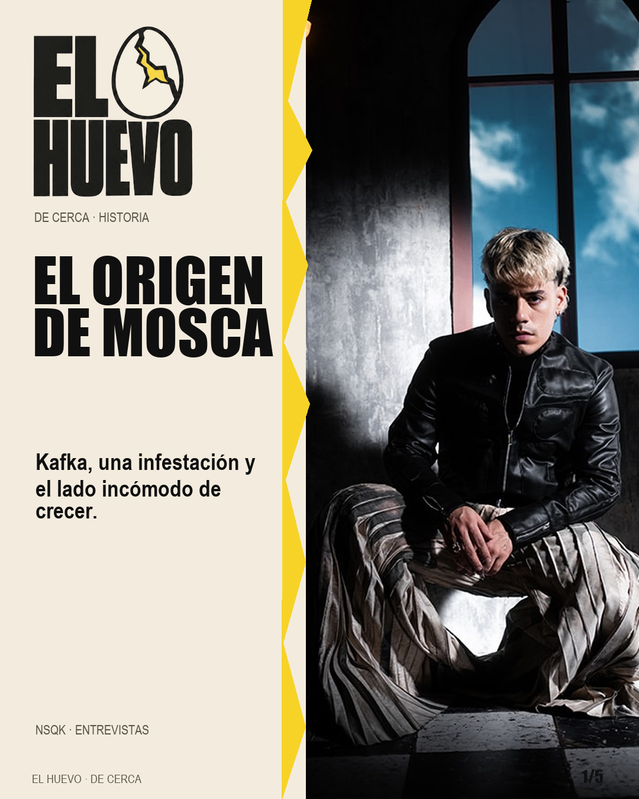
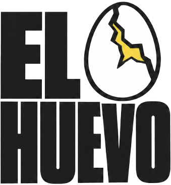
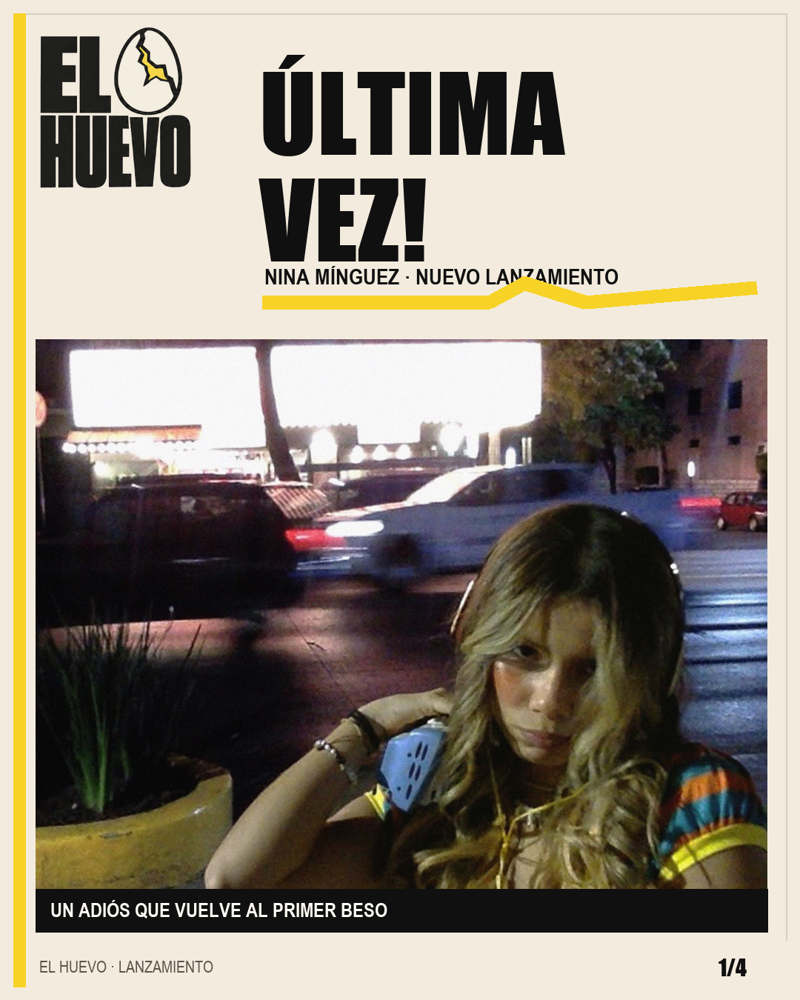

DE CERCA · NSQK
El origen de MOSCA
Kafka, una infestación y las ideas sobre ambición, ego y competencia que rodean el álbum.
Ver en Instagram
Historias, contexto y conversación alrededor de la música que nos mueve. Estos son los primeros temas de la revista.

DE CERCA · NSQK
Kafka, una infestación y las ideas sobre ambición, ego y competencia que rodean el álbum.
Ver en Instagram
LANZAMIENTO · NINA MÍNGUEZ
En su nuevo lanzamiento, Nina Mínguez convierte una despedida en el deseo de regresar al principio y pedir un rato más.
Ver en Instagram
ENCUENTROS · MÚSICA
LATIN MAFIA y Fred again.. transmitieron desde LagoAlgo el proceso para terminar 9 months & 50 hours.
Ver en Instagram